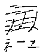
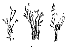
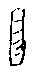
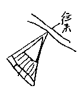
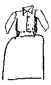
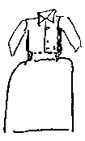
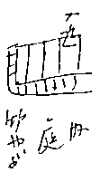

○雲に映るかげ
○茅野の正月
○ゴーゴリ的会の内面
○アルマ
○花にむせぶ（Okarakyo の夫婦、犬、息子（肺病））
○となり座敷（下スワの男、芸者二人。自分、Ｙ、温泉）
○夢、
雲に映る顔
○夕やけの空を見て居る。
○家に居なくなった母
○雲が母の顔に見える
○子供山の向うに行ってしまう
○茅野
○かんてんをつくる木のわく沢山雪の上にある。
○寒い日当りのよいところがよい
○夜のうちに凍らす
○甲府
○兀突と結晶体のような山骨
○山麓のスロープから盆地に向って沢山ある低い人家
○山嶺から滝なだれに氷河のような雪溪がながれ下って居る。
○枯木雪につつまれた山肌 茶と
○山と盆地
○下日部辺の一種複雑な面白い地形 然し小さし
○信州に入ると常磐木が多い。山迚も大きい感。常磐木があるので黒と白の配色。荘重 山と峡谷
○信州の女
○眼比較的大 二重瞼で、きっとしたような力あり。野性的の感
○蚕種寒心太製造
隣室の話
男、中年以上姉さんという女
もっと若い女、
芸者でもなし。品のわるい話。工女であった。
古女「こんだあ、上野公園や日比谷公園へつれてってくれないかね。」
古女「はぐれないようにして貰わなくちゃ」
○男「新宿は二十七日っきりだから、浅川だけだね、参拝するなあ」
中女「うれしいねえ」
「だけど月経がさ」
「フッ！」
男「いや 女は……見たような気はしないし、ちょいちょいちょいちょい――行きたくって――」
若女「車でとばしちまっただけで何が何だか分りゃしなかった、足でちっとも歩かないんだもの」
中女「宿賃いくらですってきき合わせたら、五円だって、えー五円？ っていったのよ」
「あらいやだ」
「宿賃なんかとやかく云わないさ」
「大きなこと云ってるわ」
田舎新聞
○「寒天益々低落
おい大変だぜ 寒天下落だよ
中央蚕糸
◇二度の左褄
上諏訪二業 歌舞伎家ではさきに 宗之助 初代福助の菊五郎の二人が古巣恋しくて舞戻ったが、今度は又初代勘彌が云々
茅野
山の裾から盆地に雪が一面、そこに藁塚が関東のとは違い大きな泡盛のびんのような形で黒く沢山ある。遠くから見下すと、まるで凍った白い雪の上を沢山のペングィン鳥が群れ遊んで居るような心持がした。
○凍って歯にしむみかん
○若い芸者、金たけ長をかけ、島田、
牡丹色の半衿、縞の揃いの着物
○寒い国の女、黒い瞼 白粉の下から浮ぐ赤い頬
○水色、白 黒の縞になったショール
○赤い模様のつまかわ
○太鼓をたたく
○木のひねくれた板に 一力と白で書いたような曖昧や
○表レン子格子
○二階トタンを張った雨戸
○月に二度女工の休み。
二十七日から八日にかけて。
○小さいのから二十前後の白粉をぬりべにをつけたのまで。
べこべこ三味線
お座つき香に迷う（端唄）がすんだら 都々逸
下諏訪らしい広告
御待合開業
今回各位の御同情により二月十八日より
御待合並にうどん店
開業致し親切丁寧を旨として大勉強仕候間御引立の程願上候、
うどん／きそば
入仙
〔欄外に〕君が……かりねの床
○下スワ、上スワ、チノ間の乗合自動車
赤、緑の車体
女車掌
茶の外套、赤いルビーまがいの指環、出入口の段に片脚ずつかけてサッソーとのってゆく。
往来所見
○毛糸の頭巾をかぶった男の子二人、活動の真似をして棒ちぎれを振廻す
○オートバイ
「このハンドルの渋いの気に入らん」
とめたまま爆発の工合を見て居る。
女の言葉の特長
ねーえ と引っぱってというが如し
だに
おいでた
だかね
居ますんね
〔欄外に〕ジンゲル［＃「ジンゲル」は横組み］ singer
木曾
山々信州より丸し。
山家、こば屋根に丸い川原の石をのせて居る。
杉、赤松など山に多し
川原に灌木が赤茶っぽく茂り、白い雪をとかして清流が流れる。
車窓に近く山、浅い
広い溪流
樹木一種特長ある
細さ 線の複雑さ 枝がこまかく 楓、山桜もあり
繊かに美しい絵的断片的風景
浅き川コンコンと流れる
山家の日向の庇に切干や薪干してあり。
山村春雪。
懐しき風景
鮎でも背を光らすように
小さく時々白波たてて
走る川水
田の中にも立木という風にあり。
枯木の美感
木曾福島から景色かわる。
もっと雄々しく山と谷とのきざみめ深し
木曾のつり橋
落合川辺の木曾川の水は深く
幅もひろし。
〔欄外に〕この辺もうステーション辺 雪なし
茅野
顔を両手でこすりつつ
「ひどいか？」
「ふーむ」
傍からおしゃく
「あらシーさん天狗になっちゃった、あんたお酒のむと、いつも鼻が赤くなるの」
二十二歳、成熟した無邪気な肉体、眠って居る欲望の放散。
○牛のような強い真直な心を牽く見かた
○赤い頬
○たべものなど、ゆっくり、時には音を立てて食う――かむ様子
フイリッポフ
○小笠原
○レッシャ売り
○ローゼン男爵夫人
○仕立屋夫妻
○ロシア語をならいに来る若者
○下の子供、としより
○ドイツ人の宣教師
○日本人の妻となったロシア女
○フッシェ嬢 拳闘士
農民小説集・六月
木村 毅氏
若月保治
現代文選
街上風景 六月三十日
夜七時頃新橋駅に来ると 乗合自動車の小屋の黒服の男、拾ったコムパクトで自分の顔を見て居た。
七月二十九日
机に花なし。庭の小町草の小輪をとってさす。
コップの水に浸って居る葉にこまかいむく毛がある故か、小さい水玉が見える。水の涼しさ、冷たさが感じられて美し。
同
きのう、床の間に白、桃色、朱、一株の鬼百合をまぜ、赤絵壺にさして飾る。
床壁、緑っぽき黒の砂壁、その前に花の色、実に落付いて美しき調和。
絵――油、にかきたい心持がした。
恐ろしい風の吹く深夜
月皎々
黒龍のような雲
白い花
硫黄山
五月 那須
○いし子
○きみ子 色気あり
Ｙ「さあこれから行って寝よう」
キ「眠らせませんよ」
きみ子 びわ師がいい人、
○みどり
米問屋の女房、その手下の男との話
「さよう、さよう」
「いくら私共が御迷惑をかけまいと思って居たって、親銀行が困って居るんですから」
「全くですな」
「地震の年ですかな、その次の年でしたかな、鈴木商店が潰れて随分苦しみましたぜ」
「いや、やっぱり車輛課長」
「随分然し家へなんか居催促でしたよ、執達吏が来るかと思って心配しましたよ」
夢
六月九日
原稿のつぎばりをしようとして小さい鋏をつかう拍子に
「おや、これは先がつぶれて居ない」
奇妙に思い、この鋏の先がつぶれたのは夢の中のことだったと思い出した。つづいて昨夜のもう一つの夢思い出した。それは柔かい緑色の若葉の梢の中からいくつも、いくつも黒蝶のように雛鳥の黒いのがかえって舞いたつ。驚いて見て居るとだれかが 何とか鳥です と云った、その名 一寸美しかったのだが、覚えず。
Ｙの同じ夜の夢
Ｙ、ベコがピアノを弾いて居る、手つきがよい、ピアノを一つ中古で買おうという、オルガンのような見かけの貧弱なの
「アグファ」という名
「へえ、フィルムと同じ名だな、
然しベビーピアノでは小さくて大きなものひけず、やすくても（五十円）だめだなと思う
上野から
○白河在の爺
大学生と向い合っていろいろ喋る。
「あなたが行ってなさる学校にもはあ 支那の留学生来てますかい」
「あげえ、支那さわいでるが 金なじょにしてるだべ」
「政党争いみたいなもんだっぺ」
〔欄外に〕だんだん尻上りな口調
「民衆の仕合わせを目標にはしてるらしいない」「
それに対する学生のデスポンデント
上野――黒磯
氏家から女学生のった。
紺サージの制服、緑に白線の入ったバンド
安積的口調 十二日に旅行アルラシ
東京日比谷、東京駅、横須賀、江の島などゆくらしい。たのしみにしてその話、
中に一人赤いリボンの腕時計をし、お下げどめのしかたも東京風 「まあいやだ」などというのも東京風で色も白い、一寸リボンのついた靴をはき目立つ。いつかの旅行のとき
「ジャブーンと波がかかってこんなとこまでぬれちゃったの、一生懸命かわかしてまだ時間があるから、又遊びにいったら、又ジャブーンかかっちゃったの、又乾したけれど間に合わなくてとうとう買っちゃった。ここっきしないのが五十銭だって。
〔欄外に〕ヽの打ってあるところにアクセントあり
「じゃすね出ちゃったね」「え、何とか何とか」
「やんだこと、到頭×ちゃんとうとと叱られてんの」
「何して」
「旅行のこと心配しておっかしなことばっか喋ってんだもの――食べもののことばっか考えて、紙にかいたり何かしてっからよ」
「チョコレートにシュークリームにもってこうて？ 持ちものんなるから 私お菓子なんか何にももってがない」
「むこうで買う方が雑作ないね」云々
べこの前の二人 しきり英語を暗記して居る ディクテーションとかいたかみを二つにたたみ、見ると 巻パン［＃「巻パン」は横組み］ Roll accident adapt angel そんな字が見える 天使、天子と書いてある。細い、くろ豆のような女の子。
乗り合
黒磯――那須、五月一日
○松川やのおかみ、有江の婆さんの感じ「私たちは山ん中でちぢかんで暮すように、運命づけられて居るのかもしれませんね」
〔欄外に〕乾からびた声
○オートバイが一台ゆく婆「だれだい」れのところにアクセントをつけて
運転「準ちゃんです」
「へえ、のってんのは」
「獣医です」
「牛でも病気になったんだろうか」
「馬です」
「馬も居るの」
「馬や牛かってるんです」
「ふーむ、馬や牛より木を植える方がいいや、第一食わせなくっていいもん」
後の席の男
春外套の鼠色のを着、鼻髭のある四十がらみの男、先ず
「その鞄あぶなかあねえか」
と云う、動き出してから
「ああ、いい道ですな、これならいい、御用邸の出来たおかげですよ 御用邸の出来たおかげですよ」
〔欄外に〕
その時自分、一寸可笑しい。すると松川やの女房、冷笑して、傍の運転手を一寸かえり見た。
その時自分、一寸可笑しい。すると松川やの女房、冷笑して、傍の運転手を一寸かえり見た。
謡をうたう、同乗の子供に
「お嬢さん、何か音が聞えますか？」
自分の謡のことを云うなり、子供わからず
「……」
「ねえ嬢ちゃん（ジョちゃんと云わず東北的にジョーちゃんという）何の音だろう」
又謡をうたう。母親
「何でしょうね」
と世辞にいう。
子供
「ピーンていった」
と小さい声で答えた。自動車が小砂利をとばし、車輪に当ってピーンとそのとき鳴ったのだ。
その男少し低能のようで、「水車、水のまにまに廻るなり やまずめぐるもやまずめぐるも」
細い声を無理に出して見たり低い声を出したりしてうたう。
つれの男迷惑そうにしてだまって居る。
「いくらかのぼりだろうかな」
「ならし六度の勾配になって居ります これからずーっと上りになります」
「ふーむ、ずーっとね」その男松川やの細君の手真似をする――手をずーっととあげて。やがて、ギーアをかえ爆音つよし
「ほらのぼりだな、
うるさい、うるさい
Ｈ・Ｋのいたずら
文学少女が来る。
「私小説かきたいんですが」
「あなた恋愛をしたことがありますか」
「いいえ」
「恋愛もしないで小説かこうなんて――じゃ例えばですね、私を恋の対象としてですね、あなた私とこうして居るの、心持いいですか？」
「ええ」
そんなことで、娘くたくたにしてしまう。やがてつれて箱根などにゆく。
四月二十八日 那須
○まだ若葉どころかやっと芽のあま皮がむけたばかり
○笹芝にまじって春輪どうの小さい碧い色の花が咲いて居る。
○山の皺にまだ雪アリ
○四五月頃の温泉あまりよくなし。
○枯山に白くコブシの野生の花 遠くから見える景色よし
都会の公園
日比谷公園 六月二十七日
○梅雨らしく小雨のふったり上ったりする午後、
○池、柳、鶴
ペリカン――毛がぬけて薄赤い肌の色が見える首、
○ただ一かわの樹木と鉄柵で内幸町の通りと遮断され 木の間から黄色い電車、緑色の水瓜のようなバス、自動車がとび過るのが見ゆ
○プラタナスの下のベンチ
緑色のコートをきた女、断髪の女とかけて居る。断髪の方の髪の工合をコートがなおしてやって居る
通行人
ポートフォリオを抱えた爺、学生、アルパカの上っぱりをきた職人、若い女――浴衣、すあし、唐人まげ 特に若い女断髪の方をしきりに見てゆく
男却って感情あらわさず
女皆 おや、何とか何とか思ってすぐ。
日比谷交叉点
十文字に馳る電車、赤い旗、青旗
白ズボンに赤すじの入った
円たく、パッカード、セダンの硝子扉の中に白粉をつけた娘の頸足が見える。赤い毛糸帽が自転車でとぶ。
荷馬車が二台ヨードをとる海藻をのせて横切る。
男の児が父親に手をひかれて来る 男の児の小さい脚でゴム長靴がゴボゴボと鳴った。
〔欄外に〕
ウインネッケが二十七日地球に最も近づく。前日の百五十三万里に比して三万里近くなって居る一時間正ニ千二百五十里 一分分にしても二十一里弱 文字通り宙をとんで来た。
ウインネッケが二十七日地球に最も近づく。前日の百五十三万里に比して三万里近くなって居る一時間正ニ千二百五十里 一分分にしても二十一里弱 文字通り宙をとんで来た。
上野の自働電話（午後十時）
直ぐとなりにバナナのたたき売りあり、電話の話と混同する
「ああもしもし（バナナや）ええやっちまえ」
「あら
 何云ってらっしゃるのよ」
何云ってらっしゃるのよ」「畜生！（ばななや）もしもし困っちゃうな、ばななのたたきうりがあるんですよ、この電話のそばに」
ゴーゴリ的会の内情
主事 古知事（名がすき）
知事の年俸五千円
今はあっちこっちで七千円近くとる、
今はあっちこっちで七千円近くとる、
竹内 女房子は故郷に置き下田の男妾、実践を見当にして居る。授産所の村井ともう一人の女を関係して居る。そのことを、男達に知られるのがいやさに、男の職員が女の方にゆくとやかましく云う。
宍戸、宿直の日、小使部屋に居た そこへ女のひとが来て、喋って居るところへ、ひょっくり竹内入って来て、翌日やめさせるとか何とか云う、やはり臆病からなり。
竹中、元、実業界に居た男、大正九年の暴落でつぶれ、竹内のところでごろつき、会に入れて貰う。赤坂の芸者にひっかかった尻ぬぐいその他すっかりさせた男、段々隣保館で勢力を得て、今しきりに反竹内熱をたきつけて乗とろうとして居る。その男が、まあそれはよくないと宍戸をやめること中止さす。
竹中、元、実業界に居た男、大正九年の暴落でつぶれ、竹内のところでごろつき、会に入れて貰う。赤坂の芸者にひっかかった尻ぬぐいその他すっかりさせた男、段々隣保館で勢力を得て、今しきりに反竹内熱をたきつけて乗とろうとして居る。その男が、まあそれはよくないと宍戸をやめること中止さす。
○宍戸に竹内どてらなどくれる。
○横田 中央出、両方にはさまりどうしたら利口に立ち廻れるかと考えている男。
○小野
○唐沢 老人、眠って居るいつも竹内の弱点をにぎる
○三輪
○竹中 竹内にすっかり恩になったのに反竹内熱を煽ろうとして居る。
もやをやめさせろという そして当人を見ると、何故やめるか いやなことがあるか何とかなろうなどと云う。電話で「バカヤロー」と怒鳴るというウソ、人にそんなことを云うだけ 横田をやめさせろと云いつつ横田には内密で、成人教育をやらせる。
〔欄外に〕
いたちごっこ
竹中は竹内を精神欠カンがあると云い、竹中をモヤは道徳的欠カンがあると云い、そのもやを、竹内は低能児と云う。
お澄、の言葉によってそれが知れる。
いたちごっこ
竹中は竹内を精神欠カンがあると云い、竹中をモヤは道徳的欠カンがあると云い、そのもやを、竹内は低能児と云う。
お澄、の言葉によってそれが知れる。
五月二十二日
Mutter のことをいろいろ思い、この頃一つ違った観察をした。
老年になろうとする前に、まだ若さがのこって居て、その不調和と、生活に対する執着から苦痛が生じ気分もむらになる。若い女に対して嫉妬深い。普通の女、五十になれば老衰し切るがまだ若いところが多いだけ苦しいのだ。その若さがもがく、然し目的ない――生活の――。故に苦し。若くない、老人でない、その苦痛、同情すべし。
六月或日
Ｙ机の前で旅券下附願につける保証書の印を加茂へもらいに送るその用の手紙書きつつ
「ねえべこちゃん、これ切手はらないでいいんだろうか――印紙を」
「ハハハハもやでもそういう感違いするのね ハハハハ愉快愉快」
「いらないのか？」
「いらないのよ 収入印紙ていう位だもの」
――これで一つ思いついた
持参金をうんと貰った男に
「君の婚姻届には収入印紙がいるね」
まあ、一寸小説もよむ
田山
或文学青年
詩の話
活動 ナナ、ボージェスト これをジェストボー と云った
いろいろしかつめらしく話しをして居たところへ苅田さん来、何だか調子がちがって来
「苅田さんロシア語おやりになるのよ」
軽くふざけ
「陰鬱な文学をおやりになるんですね」
自分
「陰鬱って――この頃のなんか」
「ああ元気な健康な文学です」
「すべて美でも極度にゆけばやや陰鬱ですよ。ナナだって――フランスの情熱だって燃えれば」
「ええモウパッサンだって陰鬱です」
すっかり軽く、見せびらかしになる。面白し。
Oka Ra Kyo――とあるのを
何？ 何だって 赤らっきょう？
大笑い
いって参ります＝いてまいりまち
枕＝おまくわ
舌を出してジョラン
ふずめ
中島貞子
東京女大
東北大学ドイツ文科哲学
「文科って――何」
「それが大変なの」
「本当はね、女子大学で英文科をしたから 英文科だといいんだけれどドイツ語なんかやって」
Ｙ「あなた、おうち お父さん何をしておいでです」
「仏様」
「え？」
「――仏さまになっちゃった」
写真をとる
Ｎ「あら 脚おうつしんなるの？」
Ｙ「ええ、谷崎さんに送ってやろうと思って」
○賢こいので何か云ってだまったとき 美しさがある
○美しきインテレクチュアル婦人という心持
〔欄外に〕
二十四歳 水色のクレプ・ドシンのショールが似合うたち。桃色ろの半襟 色白、
二十四歳 水色のクレプ・ドシンのショールが似合うたち。桃色ろの半襟 色白、
四つの子供 楠生
○七つになる姉 やっと覚えた片仮名で クソオ とかく 呼ぶのもクソオさん
○頬っぺた高くふくれて居るが手など細く弱々し。
○坊や たべるの たべゆの
○カキクケコ云えず かあちゃんをターチャん
○いもの煮えたの御存じない いものとぐちゃぐちゃいい、ジョジョンジナイ ジョジョンジナイと云う。
○おへそを デンデン
○ありがとう あなとうとーのみこと（勅語奉答の覚えた）
○エプロンに お月と兎ついて居 眼玉が碧い貝ボタン、その眼玉とるぞ とＹいう、片手でお月さんをかくし、片手で兎の目玉かくし。あとになってもその手をはなさず
「もうとりません」
と云われてやっと離す。そのように覚えのよい、小心な、根気よいところあって、哀れ。
○四つの子供がよく大人の言葉と表情を理解するだけでもおどろくべきものだ。
○「ああ 一寸姐さん」と立つ関さんの後を
「ワアー たあたん」
と忽ちかけ出す
「ああ あぶない」
誰かがかけ出す
○風呂＝バシャバシャ
足のかわがすりむけてる
母「ほら御覧なさい、こんなになってるからお靴はけませんよ」
暫く眺めて居て、
「いたーい」
「チチンぷいぷい」をしてやる
子「いたいとこ、どこいった？」
母「お山、あっちのお山」
子「いたいとこ、お山で何みてゆだろう」
私「谷みてる」
夢
一、三角の家
雪がある。船頭のような男と二人歩いて行くと、向うにずらりと並んだ長屋が見える。一間ずつ一かわこう一側並んで居。
一間のなかにいろいろな人間がいろいろにして暮して居るのが見える。夫婦さし向いで食事して居るの、年よりと子供が
「ああして置いてよっぽど人が入るようになりました、こしらえものです」
夢 二
の家、なかに又三角に三方障子でかこみ、なか畳そと板敷。板敷歩くのにいい心持、ひろい端にフロ場、厠、粋なのがついて居る。一寸面白いな、と思う。あの明るい障子のなかに居たら面白いな、と子供のときのままごとのような興味をもった。
夢 三
だらだら坂をのぼる 細長い廊下のようなごたごたしたところを抜けて、職工の居るところへゆく、老女、新聞やなにか散って居るのをそのまま、ひどい埃を立てて床をはいて居る。傍に一人男が何かして居るのにかまわず。いやな婆と思う。
〔欄外に〕夜と見え電燈の灯でこれ等が見えるのだ
やがて、私のたずねて来た男でて来る。Ｙの洋服を見に来た。出して来たの見るとこんな形して居る。海市でこしらえたチェックの布地

この胴のところ、バンドの幅ほどくくれて居たの何ともたまらずやがて、私のたずねて来た男でて来る。Ｙの洋服を見に来た。出して来たの見るとこんな形して居る。海市でこしらえたチェックの布地

「仕様がないじゃありませんか
じゃ、この幅をひだによせて右左に一本ずつたたみましょう、そうすると、真中に合わせめの線があってなるから少しは形がつくでしょう」と手真似して話した。
夢 四
天皇、ステーションに停って居る汽車の中から何か宣う
体をゆすりつつ 今大きな声 急に小さい声 又大きい声 変に不安だ。群集笑う 「何故笑うのか」と怒り給う。
〔欄外に〕
新聞に天皇が多摩陵へ御出かけのときの車窓に立った憂鬱な写真を見た
すると今度は自分が立って喋って居る。新聞に天皇が多摩陵へ御出かけのときの車窓に立った憂鬱な写真を見た
「私は眠れません、世界に思想がありすぎるのです、
まだ字を知らなかった時から人間はこんな形で（と手の指で楔形文字の形をこしらえて見せ）思想を表して来た。
それから何万年かの思想がたまって来て居るのですもの、どうして眠れましょう ああ、思想が多すぎるのです」片手で胸を押え悲痛な感情で叫んだ。
目がさめてもその心臓がちぢんだような悲しい感じのこって居た。元ずっと前 国男が首を吊ってフロの中に下って死んで居た夢見たときも目をさましてから、その悲しみに打たれた心持去らず悲しかった、それに似て居る。
Ａ、Ｙ、志賀さん
Ａ、Ｙ、 Ｙの心のよさに対して自分は彼女を 傷つけること出来ない。
Ａには肉体的にひかれるのです
苦しい、志賀さんに来ていただく
そう云って居る 夢の記憶
ディテエールはっきりせず、
何か大きな宿やのようなところ

こんな部屋に入り
二人でねられますか？ 大丈夫？
ときいて居た記憶、（千ヶ瀧の思いがあるのだ）
女が育てる女のつまらなさ
電力が欠乏した活々しないものをつくる力が女同士ではある。
どんなにその女を女が愛しても やはり同性の相殺、心理的にあり、男ばかりの中で育った男と同じ欠点女ばかりの生活にはあり、
〔欄外に〕度量 幻想の欠乏。安定専一のところ。
┌そうでないかと思うと
┤ 三宅やす――つや子とのような親娘二人でおしゃれし 同性の 男性に対する同伴者となるようなもの
└ 津田敏子と娘のようなの 本当の母娘関係少し。
京言葉
「なあ、へ ×はん」
「あんたはん、お見いしまへんのか」
「あほくさ！」
「けったいな人」
「知らん」
「おおきに」
「そうどすか」
「
「そらあてかて 知ったるさかい」
「知らん、云わはるやないか」
「どす がな」
「ふーむ、そか？」
「えげつない
「とでも云えばええが」
「もっさりしとる」
「よう 肥えてやはりますな」
胴間声
「
外事掛
太った男
紺ベルトのついた外套
「あすこでは これやって居たんですよ」
両手でピアノ弾くようにする タイプライターのことなり
「本の宣伝に来たとは思いませんが、得手が分らないんでね」
三月十三日の雪
もう芽ぐんだ桜の枝やザクロの枝を押しつけて、柔い雪が厚くつもった。
床の間には桃が活けてある。
竹をすべって雪の散る音を、おせんはたのしい落付いた心持できいた。
三沢の話
何とかコーセン和尚あり、有名
或僧、出かけて
「久しくコーセン和尚の高名をきく、麦コーセンか、米コーセンか」
「味って見ろ」
「喝！」
「むせたか、むせたか」
雪のあくる日 三月十三日頃
雪ぶつけ
朗らかな大騒動
女 私着物かりてかえるわ
男 そのまんまおかえりなさいよ
若い女 いやァいやいや